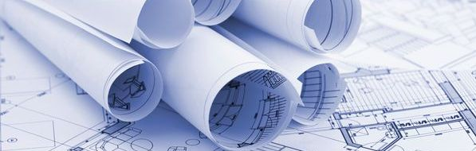
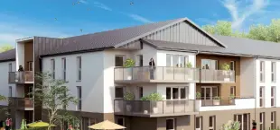

RÉALISATIONS ET PROJETS (2001-2020)
Pour les anciens :
- Réfection extérieure des maisons du domaine de la source
- Aménagement d’un espace climatisé à la maison de retraite
- Aménagement d’un espace climatisé au domaine de la source
Aménagement et réfection des bâtiments communaux :
- Réfection de la salle Levavasseur
- Remplacement des huisseries du logement de J. P. Le doux
- Pause de jardinières autour du parvis devant le foyer, pour limiter l’accès des voitures dans le parc municipal
- Remplacement des portes d’entrées du foyer et pose de portes coupe feu
- Remplacement du rideau de scène du foyer communal
- Réfection du rez-de-chaussée de la mairie
- Changement de l’horloge de l’église
- Réfection des vitraux de l’église
- Réparation de la toiture de F. Leger
- Démolition des friches industrielles du site G. Grenier
- Réfection du bâtiment des diesels
- Réfection intérieure du foyer municipal
- Aménagement des nouveaux vestiaires pour le personnel technique
- Remplacement et électrification des portes des garages municipaux
Lutte contre les risques :
- Passage d’une canalisation de 600 mm sente Delaunay et raccordement direct au Cailly, pour limiter les inondations.
- Passage d’une canalisation de 600 mm sente Delaunay et raccordement direct au Cailly, pour limiter les inondations.
- Comblement de la marnière du bois planté
- Mise en place du plan d’urgence (PPMS)
Mise en sécurité et conformité des canalisations publiques :
- Remplacement des canalisations de gaz rue V. Hugo, rue Pasteur, rue J. Jaures
- Remplacement des canalisations d’eau potable, rue A. Briand, rue de l’Abbaye, rue Quidel, Chemin de l’étrille
- Renforcement de la pression d’eau potable chemin de l’Etrille suite à l’installation d’un compresseur.
- Effacement des réseaux EDF et France télécom dans le secteur commerçant de la route de Dieppe.
Les achats divers de gros matériel :
- Achat d’une tondeuse auto portée
- Achat d’une voiture électrique
- Achat d’un épandeur de sablage
- Achat d’une débroussailleuse tractée
- Achat d’un épandeur d’engrais et aérateur, tractés pour le terrain de football
- Remplacement des tables et chaises du foyer municipal
- Remplacement du serveur informatique de la mairie
LE LOGEMENT

Informations sur l’habitat locatif et accessions nouvelles :
Notre ville compte 36 % de logements collectifs, locatifs.
1 - 171 logements à la résidence du PARC, appartenant à l’Immobilière Basse Seine ; de type T2 T3 T4 T5
2 - 112 logements à la résidence SAINT MARTIN, appartenant à l’Immobilière Basse Seine; de typeT2 T3 T4 T5
3 - 199 logements rue Victor HUGO, appartenant à Habitat 76; de type T1 T2 T3 T4 T5
4 - 42 logements à la résidence du CAILLY, appartenant à Habitat 76; de type: T2 T3 T4 T5
5 - 11 logements à la résidence des IRIS, appartenant à Logiseine ; de type T3, T4
6 - 24 logements à la résidence du bien être, dont 12 locatifs, gérés par Logiseine ; de type T3, T4
7 - 40 logements à la résidence du manoir appartenant à Logéal ; de type T2, T3, T4
8 - 35 logements à la résidence des bergeronnettes appartenant à Logiseine ; de type T3, T4
9 - 79 logements « les balcons du Houlme » 61 en accession et 18 en location
10 - Constructions des hauts vergers 26 logements en location et 33 lots à construire
La RPA constituée de 62 logements, appartenant à ROUEN Habitat; de type: Studios (42 logements) et T2 (20 logements)